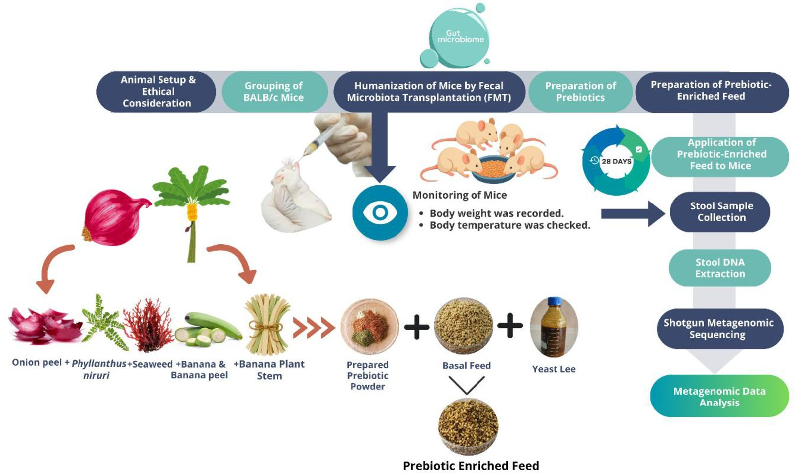

Food Bioscience · Vol. 82 · 2026 · 109411
A multi-component prebiotic formulation selectively modulates gut microbiota in a humanized mouse model
Department of Microbiology, Jashore University of Science and Technology
0.3 → 1.4%Bifidobacterium pseudolongum
0.01 → 1.5%Lactobacillus johnsonii
0.01 → 1.5%Limosilactobacillus reuteri
Humanization by four weekly fecal microbiota transplants created a hybrid human–mouse gut community. A prebiotic made from banana stem and peel, onion peel, Gracilaria seaweed, Phyllanthus niruri and yeast lees enriched beneficial commensals while suppressing Staphylococcus, Streptomyces, Rothia and Acinetobacter — all profiled by shotgun metagenomics.
